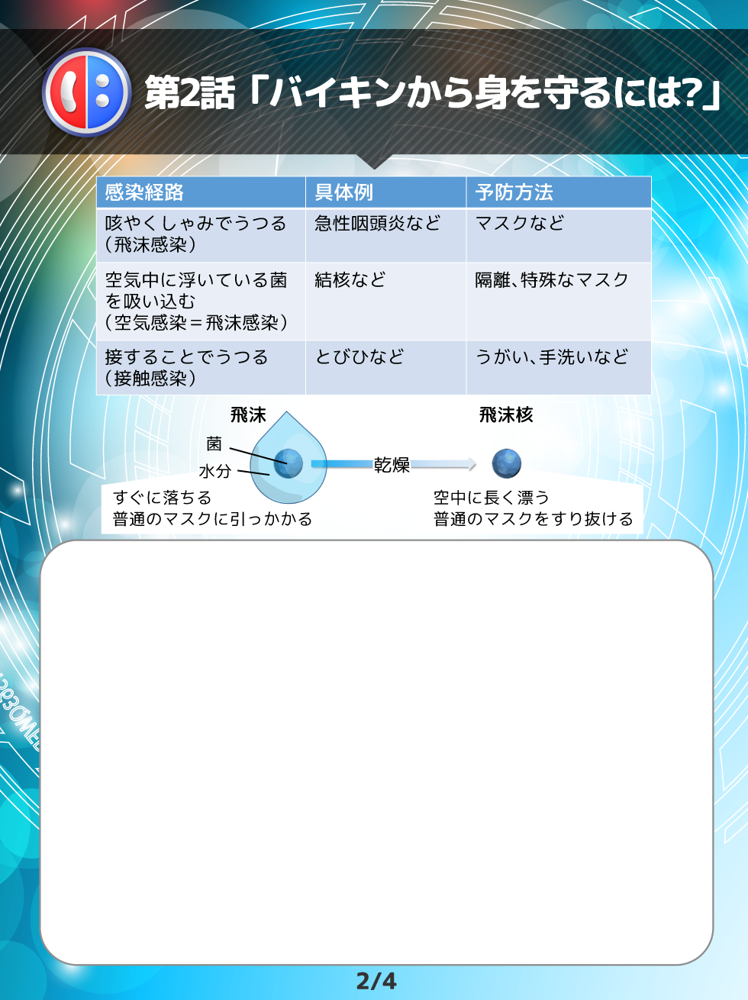

| 病気によって、それぞれ違ってね、侵入ルートをさらに細かく考える必要があるんだ。表を見てごらん。 | |
| ええと、感染経路が侵入ルートのことか。接触感染は分かるけど、飛沫と空気感染はどう違うのかしら? | |
| じゃあ、下の図を見てみよう。飛沫の方が大きいのが分かるよね。飛沫は、咳やくしゃみで出てくるしぶきのことで、水分に囲まれていて大きめの粒だから、すぐに落ちるし、普通のマスクにも引っかかるから、普通のマスクでも予防できるんだ。一方、空気感染は、飛沫核と呼ばれる乾燥状態の菌を吸い込むことで起こるんだ。水分がない分、空中に長く漂うし、普通のマスクには引っかからないから、目の細かい特殊なマスクが必要なんだ。 |